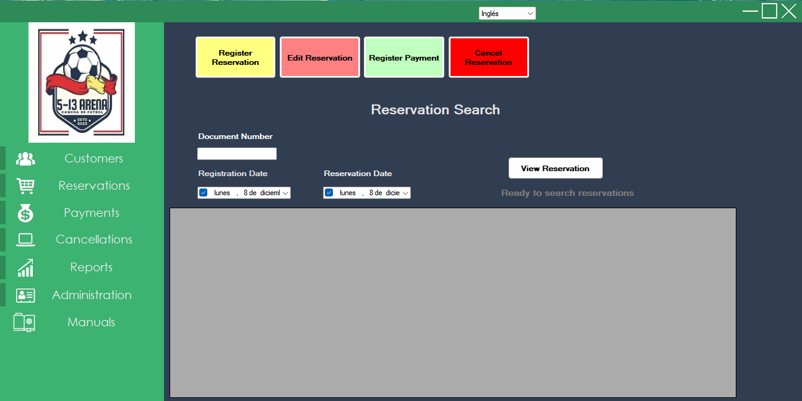
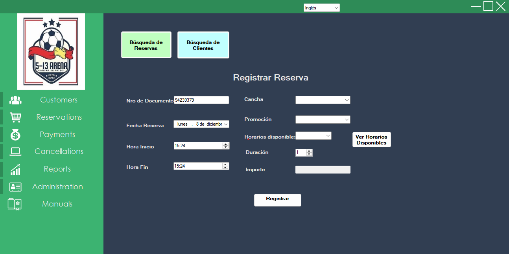
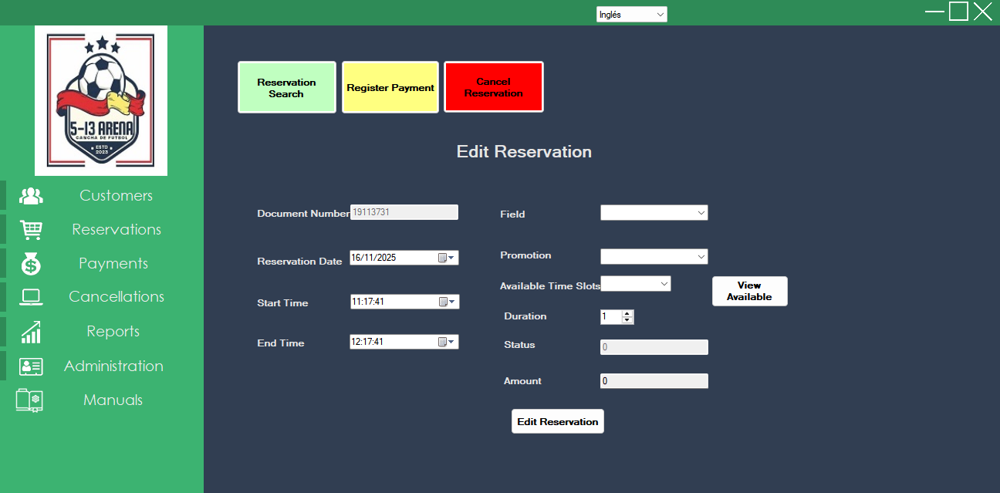

3.2 Sales Module – Reservations
3.2.1 Reservation Search
In this module you can create, search, edit and cancel reservations, as well as register related payments.
Available filters:
- Document Number
- Reservation Date
- Registration Date
Click Search Reservation to display the results grid.
Reservation status is indicated by color: green (Confirmed), red (Cancelled) and other colors for different states (Pending, etc.).

3.2.2 Register Reservation
- From Sales – Customers, confirm or update the customer data.
- Go to Sales – Reservations and click Register Reservation.
- Select field, date, time slot and, optionally, a promotion.
- After selecting the date, click View Time Slots to see the available options.
- The amount is calculated automatically according to the field and promotion selected.

3.2.3 Edit Reservation
- From Sales – Customers, confirm the customer data.
- Go to Sales – Reservations and click Edit Reservation.
- Update the necessary fields: field, date, time and promotion (optional).
- When you change the date, click View Available Time Slots to reload the free time slots.
